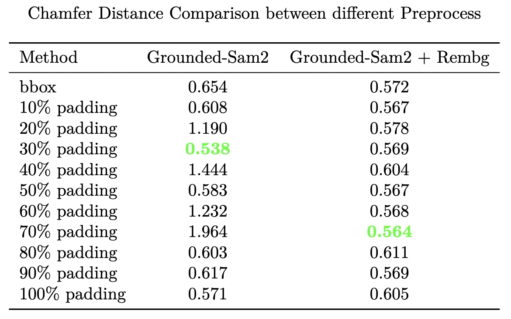
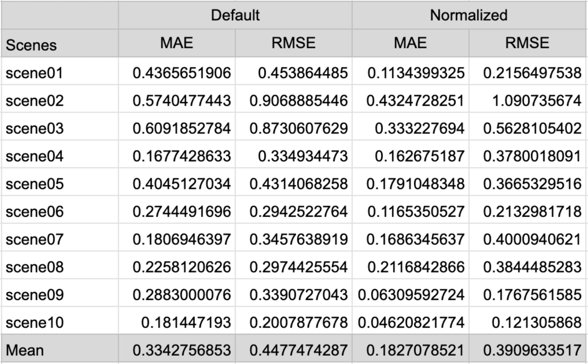
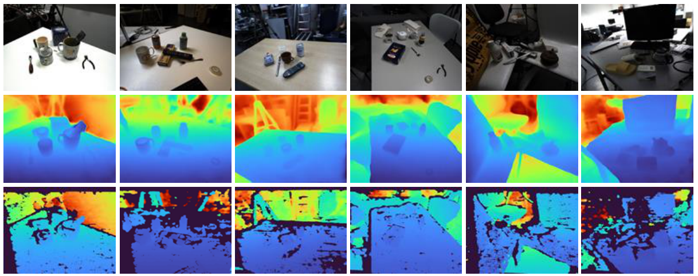
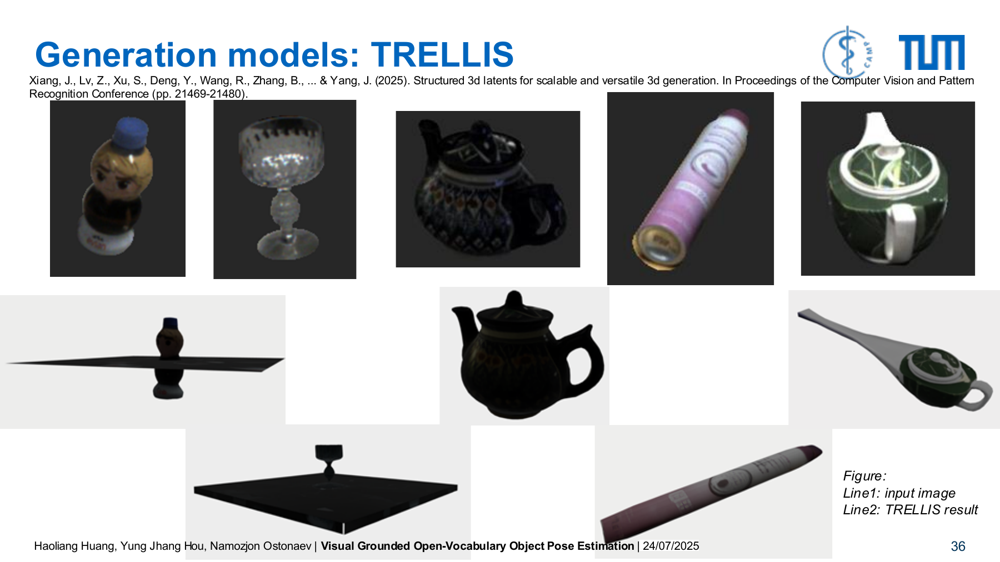

Method at a glance
How it works
- 01Find the targetA language description guides Grounding DINO and SAM2 to isolate the object in the scene.
- 02Prepare geometryThe crop is centered, padded and background-cleaned. VGGT predicts depth to supply the RGB-D information required downstream.
- 03Generate a meshInstantMesh is the baseline, with TRELLIS, Hunyuan3D and other generators compared as replacement modules.
- 04Recover the poseAny6D aligns the reconstructed object to RGB-D observations and scores candidate size and pose hypotheses.
Project workflow schematic.
Task
Can a single RGB scene image provide enough information to isolate an unfamiliar object, reconstruct its shape and recover its 6D pose? Our project assembled a pipeline around this question, separating depth, segmentation, mesh generation and alignment so that each stage could be tested independently.
The main contribution was integration and experimental comparison. We reused pretrained foundation models, investigated how their assumptions interact, and identified practical failure modes that become visible when the components are connected.
Approach and model architecture
Grounded-SAM-2 combines language-conditioned object localization with SAM2 masks. We compared crop centering, padding and rembg background removal, finding a centered crop with approximately 30% padding useful in the tested examples. VGGT supplied predicted scene depth.
The InstantMesh baseline combines Zero123++ multi-view diffusion with a sparse-view reconstruction model. Its generated views feed an implicit 3D representation from which a mesh can be extracted. We then replaced this stage with alternative generators, including TRELLIS, Hunyuan3D 2.5, CraftsMan and Hi3DGen, and inspected the resulting geometry.
Any6D provided the downstream alignment and pose-estimation component. Its render-and-compare strategy evaluates hypotheses against RGB-D observations. We also examined uniform versus nonuniform scale alignment, because flexible scaling can hide structural mesh errors.


Dataset and experiments
HouseCat6D supplies indoor RGB scenes, depth, segmentation masks, camera poses and object pose annotations. The mesh-comparison experiments selected the first image from each of scene01–scene10, rather than claiming evaluation across the complete benchmark.
The experiments compared depth prediction against ground truth, mesh quality across generators, and preprocessing choices. A related individual course challenge explored PPF and GeDi point-cloud registration with Grounded-SAM-2 or CNOS segmentation. That geometric-registration exercise is distinct from the final Any6D-based pipeline.
Evaluation and lessons
Depth was assessed with MAE and RMSE; reconstructed shape with Chamfer distance after alignment; pose with ADD/ADD-S, rotation error and translation error. Keeping these measures separate helped diagnose whether a failure began in geometry generation or later pose alignment.
The complete pipeline worked as an experimental framework, but pose ranking remained unstable: the scorer could favor an incorrect hypothesis or converge to a local minimum. Generated geometry also contained recognizable artifacts in some objects. These observations motivated further work on alignment and reliable hypothesis selection.


Related course work: visual grounding
A separate scene-analysis exercise in the same course examined open-vocabulary localization before the final 6D-pose project. Its report documents a selected set of 73 course images, resized to 2048 pixels for SAM2 segmentation. The masks were cached so that retrieval and verification settings could be compared without rerunning segmentation.
The workflow ranks mask candidates with multi-scale CLIP features and context-padded crops, then checks the shortlist with a vision-language model. The tested GPT-4.1 setup receives both a close-up crop and an annotated full-scene view. A local 8B LLaVA-NeXT configuration provides an additional comparison.
The report identifies several failure modes: prompt-relative CLIP scores can be misleading as absolute confidence, padded boxes can include neighboring objects, and an early ranking stage can discard partially visible targets before verification. This exercise concerns 2D grounding and candidate verification; its results are separate from the Any6D pose evaluation above.
Project visuals




Related resources
Reviewed against our 65-slide final course presentation (24 July 2025), the proposal and individual challenge report. Figures show the team’s actual experiments on selected HouseCat6D scenes. Proposed alternatives and original model-paper results are not presented as completed project outcomes. The accompanying seven-page Challenge 1 report supports the separately labeled visual-grounding exercise.